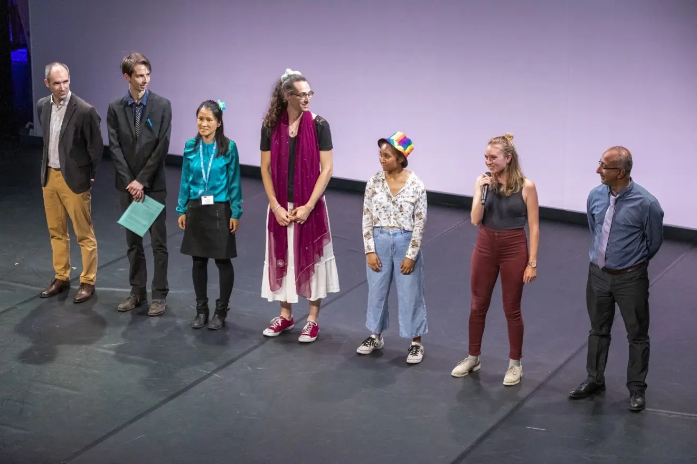

Théâtre-forum · 2021–2023
Des vies déviées
Une salle d’universitaires et de dirigeants académiques peut-elle reconnaître ses propres biais, sans recevoir de leçon ? Un spectacle de théâtre-forum commandé par l’Université de Lausanne, joué par des chercheurs et chercheuses.
- Rôle
- Casting, écriture, formation, mise en scène, animation
- Commande
- Bureau de l’égalité de l’UNIL & Centre LIVES ; reprise pour HEC Lausanne
- Format
- Courte pièce + théâtre-forum, en français
- Via
- The Catalyst, un collectif de divertissement scientifique

La demande
Le Bureau de l’égalité de l’Université de Lausanne et le Centre LIVES voulaient montrer comment les biais implicites (ou inconscients), comme le sexisme, le racisme ou les biais liés à l’apparence, façonnent les carrières des chercheurs et chercheuses au fil du temps. Le public : des universitaires et la direction de l’université, des personnes susceptibles d’avoir ces biais sans le savoir.
Ils sont venus vers nous parce que nous étions nous-mêmes chercheurs. Cela donnait au spectacle une crédibilité, et un accès, qu’une compagnie purement théâtrale n’aurait pas eus. Ensemble, nous avons fixé trois objectifs :
- montrer des biais dans lesquels le public se reconnaîtrait ;
- montrer comment ils s’accumulent au fil d’une carrière ;
- montrer ce qu’on peut concrètement faire, sans proposer de résolution facile ni fausse.
Le format
La première partie est une pièce de 15 minutes, développée par l’improvisation, dans un monde où l’ordre des genres est inversé. Voir des situations familières retournées les rend plus faciles à reconnaître, et plus difficiles à défendre.
La seconde partie est du théâtre-forum, issu de la tradition du Théâtre de l’opprimé. Une scène de discrimination ordinaire est jouée une première fois. Puis elle est rejouée, et le public peut l’arrêter, monter sur scène et tenter d’en changer la fin.
Le casting
Je caste d’abord pour le caractère : des personnes avec qui il est facile de travailler et qui savent tenir leur place. Ensuite pour l’expérience vécue du sujet, et pour une distribution qui reflète la diversité des personnes dont parle le spectacle. La technique venait en second, et s’est révélée largement suffisante : un mélange d’improvisateurs prêts pour la scène, de personnes à l’aise en prise de parole, et d’autres qui avaient juste besoin d’un petit coup de pouce. Sur ce projet, j’ai casté avant d’écrire, pour que les scènes puissent être taillées sur mesure.
Ma première séance porte toujours sur la construction de l’ensemble : la confiance, puis la vulnérabilité. Une troupe doit se faire confiance avant de pouvoir être vulnérable ensemble, et encore plus devant un public.
Écrire et répéter
Les scènes sont nées de séances de brainstorming où chaque membre puisait dans sa propre expérience, puis ont été affinées au fil des retours du client et de quelques regards extérieurs de confiance. Nous avons fait trois répétitions complètes et une séance consacrée à une seule compétence : jouer le méchant de façon convaincante. Une histoire a besoin de son méchant. Sans ce travail, les interprètes retiennent leurs coups, et les scènes ne sonnent pas assez vrai pour faire réagir.
Entre les répétitions, j’ai eu des appels individuels avec chaque membre, de 30 minutes à deux heures, pour voir comment chacun vivait avec le texte et s’il se sentait prêt.
Le soir venu
J’ai animé les deux représentations : cadrer chaque partie, gérer le passage des scènes écrites au forum en direct, et tenir l’espace pour les personnes qui choisissaient d’intervenir. La salle était lourde, les gens hésitants. Il fallait laisser de la place aux vraies réactions tout en faisant avancer la soirée.
Ce qui a marché, et ce que j’en retiens
Caster pour l’expérience vécue a fonctionné. Le public a réagi fortement parce que les interprètes avaient vécu ces situations. Plusieurs personnes se sont reconnues dans les victimes : c’est puissant, et cela doit être accompagné avec soin.
Le forum était trop court : les gens commençaient tout juste à oser participer quand il a fallu conclure. Le théâtre-forum fonctionne le mieux tel qu’il a été conçu, comme un atelier où tout le monde participe. Un spectacle touche un public plus large : c’est un compromis qui vaut la peine, à condition de le faire en connaissance de cause et de laisser assez de temps au forum.

Ce qu’il en reste
Le client nous a réinvités pour une seconde représentation à HEC Lausanne en 2023, et nous a présentés à une autre institution comme partenaire potentiel. Nous ne sommes pas allés plus loin : ma thèse demandait mon temps, et plusieurs membres ont quitté Genève, ce qui rendait trop coûteuse la formation d’une nouvelle troupe. Les textes et la méthode sont documentés : le spectacle peut être repris en français ou en anglais, ou adapté à un nouveau contexte.
Voir la première partie du spectacle : YouTube · Presse : UNIL news · Centre LIVES